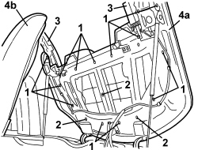
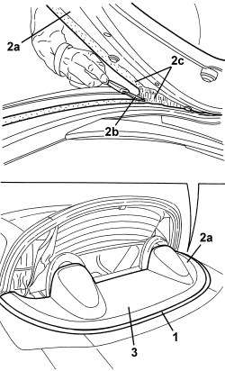
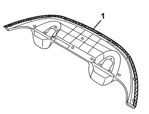
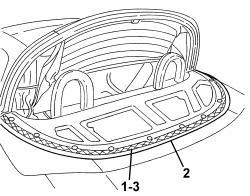
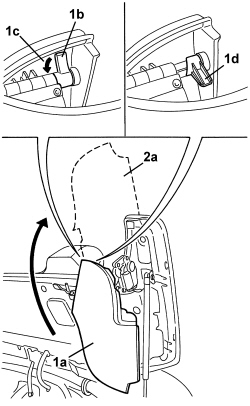
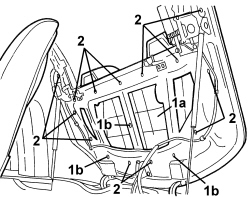

7025D11 HOOD HOUSING COMPARTMENT COVER OUTER LINING - R.R.
- Path
- Procedures > 70 FITTINGS > 7025 COMPARTMENT COVERS > 7025D HOOD HOUSING COMPARTMENT COVER > 7025D11 HOOD HOUSING COMPARTMENT COVER OUTER LINING - R.R.
- Kind
- repair procedure (removal / refitting; the operation number is the code)
- Applies to
- engines: 2.2 JTS, 3.2 JTS; all production periods
- Interactive page
- https://sloeber94.github.io/elrnDB-aBrrSpdr/en/#/946004076
Applies to: engines: 2.2 JTS, 3.2 JTS; all production periods
 Removing
Removing
 Refitting
Refitting- Prepare the hood for the operation.
Op. 0010T79 HOOD HYDRAULIC SYSTEM - DISCHARGE AND RESTORE PRESSURE
Op. 7025D12 HOOD HOUSING COMPARTMENT COVER INNER LINING - R.R.
1. Undo the bolts securing the trim.
2. Undo the trim retaining nuts.
3. Lower the side covers manually after having removed the adhesive tape.
4. Lower the hood housing cover (4a) using the electric control and leave the 5th arc (4b) raised.

Applies to: engines: 2.2 JTS, 3.2 JTS; all production periods
1. Apply adhesive body tape along the perimeter of the outer trim to protect the paintwork.
2. Raise one end (2a) of the outer trim slightly and, using a cutter (2b), cut the sealant (2c) along the entire perimeter of the outer trim.
3. Remove the outer trim.

Applies to: engines: 2.2 JTS, 3.2 JTS; all production periods
Refitting
Removing- Check that the outer trim is not damaged.
1. If the outer trim that has been removed is being reused, remove the sealant remaining on the trim using solvent.

Applies to: engines: 2.2 JTS, 3.2 JTS; all production periods
1. Remove the sealant that remains on the hood housing cover using solvent.
2. Remove the adhesive tape
3. Apply new sealant, CC80/SPAF100/HR, following the instructions on the product packaging.

Applies to: engines: 2.2 JTS, 3.2 JTS; all production periods
- Position the outer trim centering it on the cover, then press it along the entire outer perimeter to make the sealant stick.
- Raise the hood housing cover using the electric control and leave the 5th arc raised.
1. Working on both side covers (1a), rotate the release retainer (1b) in the direction of the arrow (1c) until it is in the unlocked position (1d).
2. Rotate the side covers (1a) upwards until they are in position (2a), then secure them using adhesive bodywork tape.

Applies to: engines: 2.2 JTS, 3.2 JTS; all production periods
1. Check that the outer trim (1a) is in the correct position, then tighten the fixing nuts (1b).
2 Tighten the outer trim fixing bolts.

Applies to: engines: 2.2 JTS, 3.2 JTS; all production periods
Op. 7025D12 HOOD HOUSING COMPARTMENT COVER INNER LINING - R.R.
- If discharged, restore the hood hydraulic system pressure.
Op. 7030H03 HOOD MANUAL OPENING FOLLOWING DEACTIVATION OF HYDRAULIC SYSTEM - CARRY OUT PROCEDURE
- Check that the hood is working correctly.
Topics linked from this page (3)
- 0010T79 HOOD HYDRAULIC SYSTEM - DISCHARGE AND RESTORE PRESSURE
- 7025D12 HOOD HOUSING COMPARTMENT COVER INNER LINING - R.R.
- 7030H03 HOOD MANUAL OPENING FOLLOWING DEACTIVATION OF HYDRAULIC SYSTEM - CARRY OUT PROCEDURE